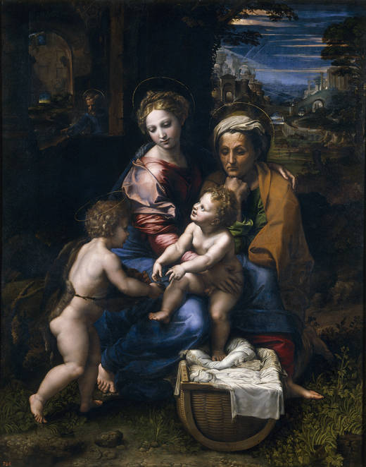

El último Rafael
W madryckim Prado otwarto zapowiadaną wcześniej wystawę dzieł Rafaela z późnego okresu. Zaprezentowano prace powstałe między rokiem 1513 (początek pontyfikatu Leona X) a 1520, rokiem śmierci artysty. Do obejrzenia siedemdziesiąt cztery malowidła, rysunki i kartony do arrasów, wykonane przez samego Rafaela oraz dwóch jego najważniejszych uczniów — Giulia Romano oraz Gianfrancesca Penni.
Wśród dzieł wypożyczonych z zagranicznych muzeów znalazły się między innymi słynny portret przyjaciela artysty, Baldassare Castiglione (własność Luwru) oraz „Ekstaza św. Cecylii” (Pinacoteca Nazionale de Bolonia). Ekspozycję wzbogaciły też madryckie perełki, jak powyższa „La Perla”.